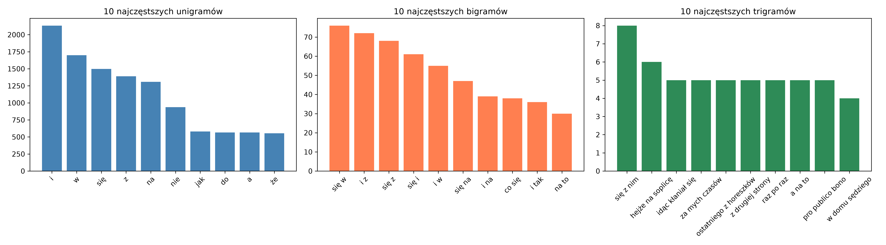
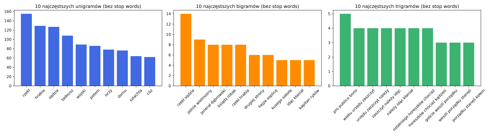
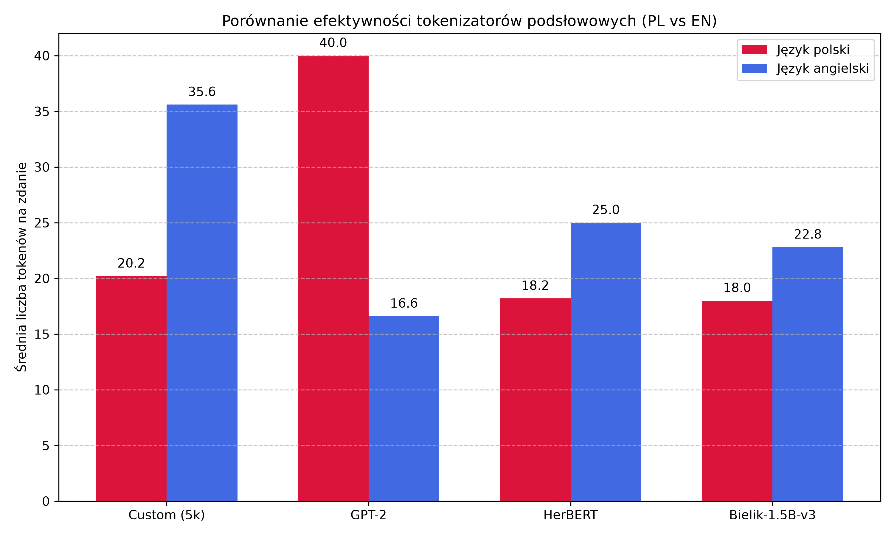

Wszystkie obliczenia i testy zostały wykonane lokalnie przy użyciu języka Python oraz bibliotek:
- nltk – tokenizacja, podział na zdania, n-gramy, stemmery (Porter, Lancaster, Snowball), lematyzator WordNet,
- spacy (model pl_core_news_sm) oraz morfeusz2 – dedykowane narzędzia do analizy morfologicznej, lematyzacji i tagowania morfosyntaktycznego języka polskiego,
- stop-words – lista polskich słów funkcyjnych,
- textdistance – obliczanie miar odległości i podobieństwa napisów,
- tokenizers oraz transformers (Hugging Face) – trening własnego tokenizatora BPE oraz porównanie z modelami gotowymi (gpt2, allegro/herbert-base-cased, speakleash/Bielik-1.5B-v3),
- matplotlib – wizualizacja histogramów n-gramów oraz wykresów porównawczych.
Materiały źródłowe:
- Korpus polski: Pan Tadeusz (Adam Mickiewicz, format .txt, pobrany z Wolnych Lektur),
- Korpus angielski: Hamlet (William Shakespeare, format .txt, pobrany z Project Gutenberg).
Tekst utworu Pan Tadeusz został wczytany z pliku. Aby nie zaburzyć struktury wypowiedzi, podział na zdania został zrealizowany na surowym tekście przed usunięciem znaków interpunkcyjnych. Następnie tekst oczyszczono: zamieniono litery na małe, usunięto znaki specjalne i interpunkcję oraz zwinięto wielokrotne białe znaki do pojedynczych spacji.
Wyniki podstawowych statystyk tekstu: - Liczba zdań: 3839 - Liczba wyrazów: 68 422 - Liczba unigramów: 68 422 - Liczba bigramów: 68 421 - Liczba trigramów: 68 420
| Lp. | Unigramy (częstość) | Bigramy (częstość) | Trigramy (częstość) |
|---|---|---|---|
| 1 | i (2134) |
się w (76) |
się z nim (8) |
| 2 | w (1699) |
i z (72) |
hejże na soplicę (6) |
| 3 | się (1498) |
się z (68) |
idąc kłaniał się (5) |
| 4 | z (1389) |
się i (61) |
za mych czasów (5) |
| 5 | na (1309) |
i w (55) |
ostatniego z horeszków (5) |
| 6 | nie (938) |
się na (47) |
z drugiej strony (5) |
| 7 | jak (579) |
i na (39) |
raz po raz (5) |
| 8 | do (566) |
co się (38) |
a na to (5) |
| 9 | a (565) |
i tak (36) |
pro publico bono (5) |
| 10 | że (555) |
na to (30) |
w domu sędziego (4) |
Poniższy wykres przedstawia rozkład 10 najczęstszych unigramów, bigramów i trigramów:

i, a), przyimki (w, z, na, do) oraz zaimek zwrotny się. Pary te tworzą łączniki składniowe, lecz nie niosą samodzielnej treści semantycznej.hejże na soplicę – zawołanie szlachty i Gerwazego podczas zajazdu,ostatniego z horeszków – wątek sporu o zamek Horeszków,za mych czasów – gawędziarski, nostalgiczny ton starszego pokolenia (Sędzia, Podkomorzy),w domu sędziego – określenie głównego miejsca akcji,pro publico bono – łaciński makaronizm charakterystyczny dla szlacheckiego języka epoki.i) występuje aż 2134 razy, podczas gdy 10. słowo (że) ma 555 wystąpień.się w) ma zaledwie 76 wystąpień (spadek o blisko 96% względem unigramu). Przestrzeń kombinacji par słów rośnie kwadratowo ($V^2$), przez co rozkład bigramów jest silnie rozproszony (długi ogon), a większość par występuje w tekście tylko 1 lub 2 razy.| Token | Rdzeń (SnowballStemmer) | Lemat (WordNetLemmatizer) |
|---|---|---|
Nay |
nay |
nay |
answer |
answer |
answer |
me |
me |
me |
stand |
stand |
stand |
unfold |
unfold |
unfold |
yourself |
yourself |
yourself |
You |
you |
you |
come |
come |
come |
most |
most |
most |
carefully |
care |
carefully |
upon |
upon |
upon |
your |
your |
your |
hour |
hour |
hour |
struck |
struck |
struck |
twelve |
twelv |
twelve |
get |
get |
get |
thee |
thee |
thee |
bed |
bed |
bed |
Francisco |
francisco |
francisco |
relief |
relief |
relief |
much |
much |
much |
thanks |
thank |
thanks |
bitter |
bitter |
bitter |
cold |
cold |
cold |
sick |
sick |
sick |
heart |
heart |
heart |
meet |
meet |
meet |
Horatio |
horatio |
horatio |
Marcellus |
marcellus |
marcellus |
rivals |
rival |
rival |
watch |
watch |
watch |
bid |
bid |
bid |
them |
them |
them |
make |
make |
make |
haste |
hast |
haste |
W analizowanych zdaniach zidentyfikowano słowa, dla których stemming i lematyzacja dały odmienne rezultaty:
1. carefully $\to$ rdzeń: care | lemat: carefully
- Stemmer odciął przyrostek przysłówkowy -fully / -ly, sprowadzając wyraz do bazy czasownikowo-rzeczownikowej. Lematyzator zachował formę carefully, ponieważ przysłówek stanowi odrębne hasło słownikowe.
2. thanks $\to$ rdzeń: thank | lemat: thanks
- Stemmer potraktował końcówkę -s jako fleksyjną końcówkę liczby mnogiej/3. osoby czasownika i usunął ją (thank). Lematyzator rozpoznał wyraz jako rzeczownik w liczbie mnogiej (plurale tantum) i zachował postać hasłową thanks.
3. haste $\to$ rdzeń: hast | lemat: haste
- Stemmer zastosował regułę odcinania końcowego niemego -e, w wyniku czego powstał sztuczny ciąg liter hast. Lematyzator odwołał się do słownika WordNet i pozostawił poprawny wyraz haste.
Badane napisy: - $S_1$: „Ala ma kota” (długość: 11 znaków ze spacjami) - $S_2$: „Ala posiada kota” (długość: 16 znaków ze spacjami)
textdistance:6100.37500.6250Wspólny prefiks „Ala ” (4 znaki) oraz sufiks „ kota” (5 znaków) są identyczne i mają łączny koszt równy 0.
Różnica zachodzi wyłącznie pomiędzy słowami ma (2 znaki) a posiada (7 znaków).
Minimalna sekwencja przekształcenia wyznaczona przez algorytm programowania dynamicznego:
1. Zamiana (substytucja) litery 'm' na 'p' (koszt = 1)
2. Wstawienie (insercja) litery 'o' (koszt = 1)
3. Wstawienie (insercja) litery 's' (koszt = 1)
4. Wstawienie (insercja) litery 'i' (koszt = 1)
5. Dopasowanie litery 'a' (koszt = 0)
6. Wstawienie (insercja) litery 'd' (koszt = 1)
7. Wstawienie (insercja) litery 'a' (koszt = 1)
Podsumowanie: 1 zamiana + 5 wstawień + 0 usunięć = dokładnie 6 operacji edycyjnych. Wykorzystanie wspólnej litery a pozwala uzyskać koszt 6 zamiast 9 (co miałoby miejsce przy całkowitym usunięciu ma i wstawieniu całego słowa posiada).
Poniższe słowa zostały wyekstrahowane bezpośrednio z pliku texts/hamlet-william-shakespeare.txt (w nawiasie podano liczbę wystąpień w korpusie dramatu):
| Słowo (z korpusu Hamleta) | PorterStemmer | LancasterStemmer | Czy różne? |
|---|---|---|---|
father (59 wystąpień) |
father |
fath |
Tak |
heaven (57 wystąpień) |
heaven |
heav |
Tak |
nature (23 wystąpienia) |
natur |
nat |
Tak |
matter (21 wystąpień) |
matter |
mat |
Tak |
general (14 wystąpień) |
gener |
gen |
Tak |
history (7 wystąpień) |
histori |
hist |
Tak |
philosophy (3 wystąpienia) |
philosophi |
philosoph |
Tak |
friendship (2 wystąpienia) |
friendship |
friend |
Tak |
W całym korpusie Hamleta zidentyfikowano łącznie 1923 unikalne słowa, dla których algorytmy te wygenerowały różne rdzenie.
father $\to$ father, nature $\to$ natur, general $\to$ gener).nature $\to$ nat, matter $\to$ mat, general $\to$ gen, history $\to$ hist).mat mógłby równie dobrze pochodzić od matter, material, matrix czy match, co w systemach wyszukiwawczych skutkuje dużą liczbą fałszywych dopasowań (false positives).university (uniwersytet) i universe (wszechświat).universunivers
Dwa semantycznie niezwiązane słowa otrzymują ten sam rdzeń.organization i organ.organorgeurope i european.europe $\to$ europ | european $\to$ european (brak zbieżności do wspólnego rdzenia).matrix i matrices.matrix $\to$ matrix | matrices $\to$ matric (reguła nie radzi sobie z nieregularną wymianą x $\to$ c).Przetwarzany fragment: "Litwo! Ojczyzno moja! ty jesteś jak zdrowie. Ile cię trzeba cenić, ten tylko się dowie, kto cię stracił."
Uwaga metodologiczna: Standardowe biblioteki (NLTK, spaCy) nie posiadają dedykowanego, gotowego stemmera dla języka polskiego (Snowball nie obsługuje polskiego, a spaCy realizuje wyłącznie lematyzację). W niniejszym ćwiczeniu zastosowano: 1.
spaCy(modelpl_core_news_sm) – tokenizacja i lematyzacja oparta na sieciach neuronowych. 2.Morfeusz2– oficjalny, dedykowany polszczyźnie analizator morfologiczny oparty na Słowniku Gramatycznym Języka Polskiego (SGJP), zwracający lematy słownikowe oraz precyzyjne znaczniki morfosyntaktyczne. 3. Prosty stemmer heurystyczny – regułowy algorytm odcinający sufiksy, zaimplementowany celowo, aby skonfrontować mechaniczne odcinanie końcówek z profesjonalną lematyzacją słownikową.
| Token | Lemat (spaCy) | Lemat (Morfeusz2) | Tag morfosyntaktyczny (Morfeusz2) | Rdzeń (heurystyczny) |
|---|---|---|---|---|
Litwo |
litwo |
litwa |
subst:sg:voc:f |
litw |
Ojczyzno |
ojczyzno |
ojczyzna |
subst:sg:voc:f |
ojczyzn |
moja |
mój |
moja |
subst:sg:nom:f |
moj |
ty |
ty |
ty |
ppron12:sg:nom:m1.m2.m3.f.n:sec |
ty |
jesteś |
być |
być |
fin:sg:sec:imperf |
jesteś |
jak |
jak |
jak |
conj |
jak |
zdrowie |
zdrowie |
zdrowie |
subst:sg:nom.acc.voc:n:ncol |
zdr |
Ile |
ile |
iż |
subst:sg:loc:m2 |
ile |
cię |
ty |
ty |
ppron12:sg:acc:m1.m2.m3.f.n:sec:nakc |
cię |
trzeba |
trzeba |
trzeba |
pred |
trzeb |
cenić |
cenić |
cenić |
inf:imperf |
cenić |
ten |
ten |
ten |
adj:sg:acc:m3:pos |
ten |
tylko |
tylko |
tylko |
conj |
tylk |
się |
się |
się |
part |
się |
dowie |
dowiedzieć |
dowiedzieć |
fin:sg:ter:perf |
dow |
kto |
kto |
kto |
subst:sg:nom:m1 |
kto |
cię |
ty |
ty |
ppron12:sg:acc:m1.m2.m3.f.n:sec:nakc |
cię |
stracił |
stracić |
stracić |
praet:sg:m1.m2.m3:perf |
stracił |
Zarówno spaCy, jak i Morfeusz2 sprowadzają formy fleksyjne do haseł słownikowych (jesteś $\to$ być, dowie $\to$ dowiedzieć). Morfeusz2 wykazał wyższość przy formach wołacza (Litwo $\to$ mianownik litwa; Ojczyzno $\to$ mianownik ojczyzna), podczas gdy heurystyczny stemmer odciął jedynie końcówki (litw, ojczyzn, dow), tworząc formy ułomne.
Zastosowanie SnowballStemmer("english") do słów języka polskiego dało następujące wyniki:
| Słowo polskie | Wynik stemmera EN | Zdiagnozowany błąd |
|---|---|---|
książkami |
książkami |
Brak reakcji – końcówka -ami nie istnieje w regułach angielskich. |
chłopcami |
chłopcami |
Brak reakcji – końcówka -ami zignorowana. |
samochodami |
samochodami |
Brak reakcji – brak obsługi polskiej fleksji. |
warszawie |
warszawi |
Usunięcie litery e z końcówki według reguły angielskiej. |
piękny |
piękni |
Zamiana y $\to$ i – zamiast rdzenia powstała forma l. mn. męskoosobowej. |
zrobiliśmy |
zrobiliśmi |
Zamiana y $\to$ i na końcu słowa, brak usunięcia końcówki czasu przeszłego. |
uczniowie |
uczniowi |
Usunięcie -e – zamiast rdzenia powstała forma celownika liczby pojedynczej. |
SnowballStemmer wspiera 16 języków: arabic, danish, dutch, english, finnish, french, german, hungarian, italian, norwegian, porter, portuguese, romanian, russian, spanish, swedish.
Brak języka polskiego wynika ze specyfiki gramatycznej: - Język polski jest językiem silnie fleksyjnym (7 przypadków, bogata koniugacja). - Kluczową cechą polszczyzny są oboczności wewnątrzrdzeniowe (np. ręka $\to$ rąk $\to$ ręce; miasto $\to$ mieście; wiózł $\to$ wieźć $\to$ wozi). - Zwykłe odcinanie końcówek sufiksowych od prawej strony nie jest w stanie połączyć form z obocznościami do jednego rdzenia. Wymagana jest pełna analiza leksykalno-morfologiczna (jak w Morfeuszu i spaCy).
textdistanceba $\leftrightarrow$ ab o koszcie 1 zamiast 2).| Opis testu | Badana para ($S_1$ vs $S_2$) | Levenshtein (odl. / pod.) | Damerau-Lev. (odl. / pod.) | Jaro-Winkler | Jaccard |
|---|---|---|---|---|---|
| Wymiana wyrazu | 'Ala ma kota' vs 'Ala posiada kota' |
6 (0.62) | 6 (0.62) | 0.847 | 0.588 |
| Czeski błąd (transpozycja) | 'kot' vs 'kto' |
2 (0.33) | 1 (0.67) | 0.556 | 1.000 |
| Brak litery (literówka) | 'Warszawa' vs 'Warszwa' |
1 (0.88) | 1 (0.88) | 0.946 | 0.875 |
| Tylko znaki diakrytyczne | 'żółć' vs 'zolc' |
4 (0.00) | 4 (0.00) | 0.000 | 0.000 |
| Odwrócony szyk liter | 'pies' vs 'seip' |
4 (0.00) | 3 (0.25) | 0.500 | 1.000 |
Największą rozbieżność zaobserwowano dla par 'kot' vs 'kto' oraz 'pies' vs 'seip':
- Jaccard dał 1.0 (100% zbieżności): Dla słów 'kot' i 'kto' zbiory znaków to $A = {k, o, t}$ i $B = {k, o, t}$. Ponieważ $|A \cap B| = |A \cup B|$, miara uznaje napisy za identyczne, będąc niewrażliwą na porządek liter.
- Levenshtein dał odległość 2 (podobieństwo 0.33): Jako algorytm pozycyjny bez operacji transpozycji musi dokonać dwóch substytucji (o $\to$ t i t $\to$ o).
- Damerau-Levenshtein dał odległość 1 (podobieństwo 0.67): Bezpośrednio obsłużył transpozycję sąsiadów jako jedną operację, poprawnie modelując typową literówkę.
Z tekstu Pana Tadeusza usunięto słowa obecne w słowniku stop-words dla języka polskiego:
- Liczba słów przed usunięciem: 68 422
- Liczba słów po usunięciu stop words: 43 794
- Odrzucono: 24 628 słów (35.99% objętości tekstu)
| Lp. | Unigramy (bez stop words) | Bigramy (bez stop words) | Trigramy (bez stop words) |
|---|---|---|---|
| 1 | rzekł (155) |
rzekł sędzia (14) |
pro publico bono (5) |
| 2 | hrabia (129) |
jaśnie wielmożny (9) |
wieku urzędu zaszczyt (4) |
| 3 | sędzia (127) |
jenerał dąbrowski (8) |
urzędu zaszczyt należy (4) |
| 4 | tadeusz (108) |
ksiądz robak (8) |
zaszczyt należy idąc (4) |
| 5 | wojski (89) |
rzekł hrabia (8) |
należy idąc kłaniał (4) |
| 6 | potem (86) |
drugiej strony (6) |
ostatniego horeszków chociaż (4) |
| 7 | oczy (78) |
hejże soplicę (6) |
horeszków chociaż kądzieli (4) |
| 8 | domu (76) |
kusego sokoła (5) |
goście weszli porządku (3) |
| 9 | szlachta (64) |
idąc kłaniał (5) |
weszli porządku stanęli (3) |
| 10 | cóż (62) |
kapitan ryków (5) |
porządku stanęli kołem (3) |

Do ekstrakcji nazw własnych zastosowano procedurę:
1. Tekst podzielono na zdania (sent_tokenize), a z każdego zdania wykluczono wyraz pierwszy (pozycja indeksu 0), gdzie wielka litera wynika wyłącznie z reguł interpunkcyjnych.
2. Zastosowano wyrażenie regularne dopasowujące słowa zaczynające się wielką literą: r"[A-ZĄĆĘŁŃÓŚŹŻ][a-ząćęłńóśźż]+".
3. Dodatkowo odfiltrowano spójniki wersowe (np. Gdy, Lecz, Ale), które w zapisie poetyckim rozpoczynają wers z wielkiej litery wewnątrz zdania.
Najczęściej występujące nazwy własne:
| Pozycja | Nazwa własna / Postać | Liczba wystąpień |
|---|---|---|
| 1 | Sędzia | 98 |
| 2 | Hrabia | 92 |
| 3 | Tadeusz | 70 |
| 4 | Wojski | 69 |
| 5 | Tadeusza (forma dopełniaczowa) | 54 |
| 6 | Gerwazy | 51 |
| 7 | Robak | 42 |
| 8 | Podkomorzy | 41 |
| 9 | Klucznik | 40 |
| 10 | Sędziego / Telimena | 38 |
Na tekście Pana Tadeusza wytrenowano 3 tokenizatory BPE o zadanych rozmiarach słownika: 1 000, 5 000 oraz 30 000 tokenów. Model o rozmiarze 5 000 tokenów zapisano do pliku tokenizer_pl.json.
| Badane słowo | Słownik 1 000 (liczba tokenów) | Słownik 5 000 (liczba tokenów) | Słownik 30 000 (liczba tokenów) |
|---|---|---|---|
nieprzetłumaczalny |
nie + prze + tłu + ma + cza + l + ny (7) |
nie + prze + tłuma + cza + lny (5) |
nie + prze + tłuma + cza + lny (5) |
hiperparametryzacja |
h + i + p + er + pa + ra + me + try + za + c + ja (11) |
h + i + per + para + me + try + za + cja (8) |
hi + per + para + metry + za + cja (6) |
kotkowi |
ko + t + ko + wi (4) |
kot + kowi (2) |
kot + kowi (2) |
sprawiedliwość |
spra + wie + d + li + wo + ść (6) |
spra + wie + dli + wość (4) |
spra + wiedli + wość (3) |
Uwaga dotycząca dostępności i źródła tokenizatora Bielik: Oficjalne repozytorium
speakleash/Bielik-1.5B-v3na platformie Hugging Face posiada status gated (dostęp przez API wymaga zalogowania z kluczemHF_TOKENoraz uprzedniej akceptacji warunków licencji na stronie modelu). Aby zapewnić pełną powtarzalność badań bez konieczności konfiguracji zewnętrznych kluczy API, w projekcie zaimplementowano mechanizm fallback: skrypt w pierwszej kolejności próbuje załadować oficjalne repozytoriumspeakleash/Bielik-1.5B-v3, a w przypadku braku tokena korzysta z lokalnej kopiibielik_tokenizer/(utworzonej z tożsamego, otwartego mirroracpral/Bielik-1.5B-v3-ungated). Oba warianty posiadają ten sam rozmiar słownika (32 000 tokenów) i tę samą architekturę.
Zdania polskie: 1. "Litwo! Ojczyzno moja! ty jesteś jak zdrowie." 2. "Ile cię trzeba cenić, ten tylko się dowie, kto cię stracił." 3. "Tymczasem przenoś moją duszę utęsknioną do tych pagórków leśnych, do tych łąk zielonych." 4. "Wpłynąłem na suchego przestwór oceanu, wóz nurza się w zieloność i jak łódka brodzi." 5. "Ciemno wszędzie, głucho wszędzie, co to będzie, co to będzie?"
Zdania angielskie: 1. "To be, or not to be, that is the question." 2. "There are more things in heaven and earth, Horatio, than are dreamt of in your philosophy." 3. "For this relief much thanks: it is bitter cold, and I am sick at heart." 4. "If you do meet Horatio and Marcellus, the rivals of my watch, bid them make haste." 5. "Something is rotten in the state of Denmark."
Liczba wygenerowanych tokenów:
| Język / Zdanie | Custom BPE (5k) | GPT-2 | HerBERT | Bielik-1.5B-v3 |
|---|---|---|---|---|
| PL zdanie 1 | 12 | 24 | 13 | 12 |
| PL zdanie 2 | 16 | 33 | 15 | 15 |
| PL zdanie 3 | 25 | 55 | 22 | 21 |
| PL zdanie 4 | 31 | 49 | 25 | 26 |
| PL zdanie 5 | 17 | 39 | 16 | 16 |
| Średnia PL | 20.20 | 40.00 | 18.20 | 18.00 |
| EN zdanie 1 | 22 | 13 | 15 | 15 |
| EN zdanie 2 | 51 | 21 | 35 | 31 |
| EN zdanie 3 | 37 | 18 | 28 | 25 |
| EN zdanie 4 | 45 | 22 | 32 | 30 |
| EN zdanie 5 | 23 | 9 | 15 | 13 |
| Średnia EN | 35.60 | 16.60 | 25.00 | 22.80 |

Aby precyzyjnie i empirycznie zbadać istnienie zjawiska podatku językowego (language token penalty), porównano liczbę tokenów dla par zdań będących swoimi bezpośrednimi tłumaczeniami (o identycznej treści semantycznej):
| Nr | Zdanie polskie (PL) | Odpowiednik angielski (EN) | GPT-2 (PL / EN) | Bielik-1.5B-v3 (PL / EN) |
|---|---|---|---|---|
| 1 | Być albo nie być, oto jest pytanie. | To be, or not to be, that is the question. | 17 / 13 (1.31x) | 9 / 15 (0.60x) |
| 2 | Więcej jest rzeczy na ziemi i w niebie, niż się ich śniło waszym filozofom. | There are more things in heaven and earth than are dreamt of in your philosophy. | 42 / 17 (2.47x) | 18 / 26 (0.69x) |
| 3 | Za tę ulgę wielkie dzięki: jest przejmująco zimno, a ja jestem chory na sercu. | For this relief much thanks: it is bitter cold, and I am sick at heart. | 43 / 18 (2.39x) | 18 / 25 (0.72x) |
| 4 | Coś jest zgniłego w państwie duńskim. | Something is rotten in the state of Denmark. | 24 / 9 (2.67x) | 10 / 13 (0.77x) |
| 5 | Wszystkie narzędzia muszą być darmowe i otwarte. | All tools must be free and open source. | 25 / 9 (2.78x) | 8 / 15 (0.53x) |
| Suma | — | — | 151 / 66 (2.29x) | 63 / 94 (0.67x) |
Wnioski z testu równoległego: - Dla anglocentrycznego tokenizatora GPT-2 identyczna treść wyrażona w języku polskim wymaga łącznie aż 151 tokenów w stosunku do 66 tokenów po angielsku (współczynnik 2.29x, czyli o 129% więcej jednostek). Stanowi to bezpośredni dowód na istnienie podatku językowego. - Dla polskiego tokenizatora Bielik-1.5B-v3 relacja ulega odwróceniu – polski tekst wymaga jedynie 63 tokenów (stosunek 0.67x względem angielskiego), co udowadnia, że dedykowana polszczyźnie tokenizacja podsłowowa całkowicie eliminuje tę karę.
Do analizy porównawczej wykorzystano fragment Inwokacji Pana Tadeusza (1850 znaków).
| Wariant przetwarzania | Liczba jednostek w tekście | Rozmiar słownika (unikalne) | Przykładowy początek |
|---|---|---|---|
| 1. Same wyrazy (surowe słowa) | 279 | 223 | litwo, ojczyzno, moja, ty... |
| 2. Wyrazy po lematyzacji (spaCy) | 279 | 207 | litwo, ojczyzno, mój, ty... |
| 3. Wyrazy bez stop words | 178 | 173 | litwo, ojczyzno, jesteś, zdrowie... |
| 4. Tokeny podsłowowe (BPE 5k) | 453 | 311 | li, two, ojczy, zno... |